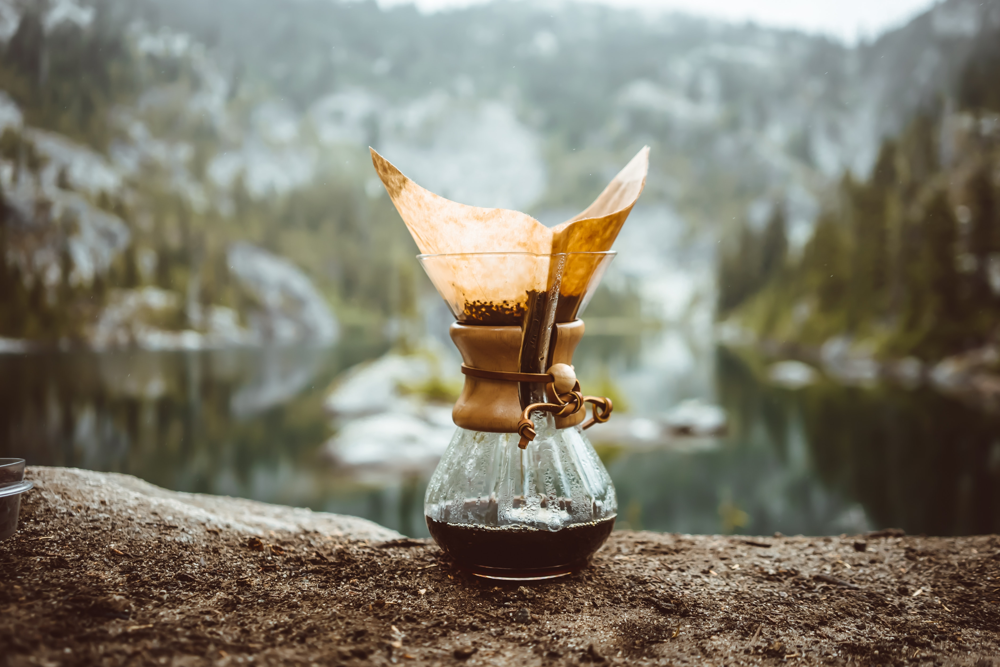

Southern Coffee
Calidad | Hospitalidad | Pasión | Comunidad | Sostenibilidad
Fue fundado en 1991 por Benjamín Furman con el objetivo de crear un lugar acogedor en el sur de Argentina donde las personas pudieran disfrutar de un café de alta calidad en un ambiente agradable. Inspirados por la belleza de las montañas, la nieve y el clima fresco de la región, decidimos establecer una cafetería que capturara la esencia del sur argentino y ofreciera una experiencia única para los amantes del café. Desde entonces, hemos estado sirviendo café delicioso y creando un ambiente acogedor para la comunidad local y los visitantes de la zona.
Nos especializamos en ofrecer una amplia variedad de deliciosos cafes de alta calidad. Nuestro
menú incluye una selección de espressos, cappuccinos, café con leche, café helado y otras
especialidades. Además, también ofrecemos opciones de café descafeinado, tés calientes y fríos,
chocolate caliente y una variedad de acompañamientos como muffins, galletitas y tortas frescas.
Nos
enorgullece utilizar granos de café cuidadosamente seleccionados y preparar cada uno con esmero para
brindar una experiencia de sabor excepcional a nuestros clientes.
Nuestra misión es brindar a nuestros clientes una experiencia reconfortante y deliciosa a través de nuestro café. Nos esforzamos por ser el lugar al que las personas acudan para disfrutar de un momento de relajación y calidez, mientras saborean una taza de café aromático.
Nuestra visión es convertirnos en el destino preferido para los amantes del café en el sur de Argentina. Aspiramos a ser reconocidos por la calidad excepcional de nuestros productos, el ambiente acogedor que ofrecemos y nuestro compromiso con la satisfacción del cliente. Buscamos expandir nuestra presencia y convertirnos en un lugar emblemático donde los amantes del café encuentren un refugio cálido y acogedor en medio del frío y las montañas...
Calidad: Nos dedicamos a utilizar los mejores granos de café y a garantizar que cada
taza que servimos sea una experiencia de sabor excepcional.
Hospitalidad: Valoramos la importancia de brindar un servicio amigable y atento
a nuestros clientes, creando un ambiente acogedor y cálido.
Pasión: Nos apasiona el café y nos esforzamos por compartir esa pasión con
nuestros clientes, brindándoles una experiencia memorable en cada visita.
Comunidad: Valoramos la conexión con la comunidad local y nos esforzamos por
ser un lugar donde las personas se reúnan, socialicen y se sientan parte de algo más grande.
Sostenibilidad: Nos preocupamos por el medio ambiente y buscamos adoptar
prácticas sostenibles en nuestras operaciones, desde la elección de los proveedores hasta la gestión de
residuos.